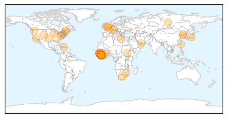
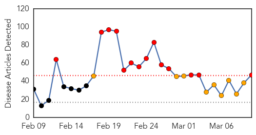
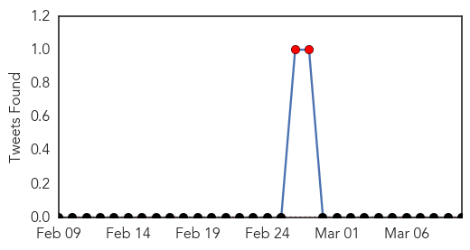
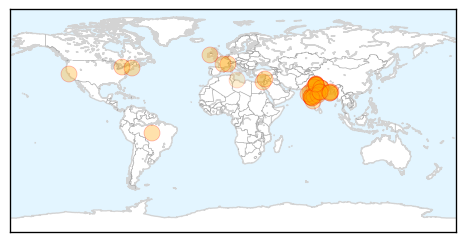

Ebola
30-Day Web Trend
0 alerts, 0 warnings

30-Day Twitter Trend
6 alerts, 4 warnings

Article Locations
Article Confidences

Top Articles:
- 1.000
- WHO to begin large-scale testing of Ebola vaccine in Guinea
- 0.999
- Monrovia club’s ebola fight not finished - Liberia
- 0.999
- Why an increase in Disease Outbreaks, part 2
- 0.998
- Ebola: A Turning Point?
- 0.997
- African tourism acts to shake off Ebola stigma
- 0.992
- Ebola drug shows some promise in first tests in West Africa
- 0.992
- Tzu Chi’s First Ebola Aid and Signing of an MOU with Healey International Relief Foundation - Sierra Leone
- 0.991
- Nurses nationwide engaged on Infection, Prevention Control « Awoko Newspaper
- 0.988
- With Ebola crisis easing, efforts to test new drugs are in jeopardy
- 0.986
- Obama to discuss Ebola response with Liberia's president
- 0.986
- WHO asks independent panel to assess its Ebola response
- 0.984
- OP ED: Sierra Leone’s President should apologize for ebola
- 0.980
- Learning the lessons of Ebola
- 0.980
- Tuesday morning fire damages vacant home in Chase
- 0.977
- Sierra Leone News: Women making it happen on the Ebola front-line « Awoko Newspaper
- 0.976
- W.W. Hastings nurse home from Ebola fight
- 0.970
- Counting the true cost of Ebola
- 0.964
- Top anesthesiologist teaches readiness on Ebola — CLU Magazine
- 0.951
- UN urges independent investigation for jailed Mauritanian activists
- 0.951
- In South Sudan town devastated by conflict, UN official condemns forced child conscription
- 0.951
- Meeting foreigner can't result in dismissal from armed forces: SC
- 0.951
- Home eviction can lead to depression, high stress
- 0.951
- Libya at 'critical juncture' as parties wrap up round of UN-supported political talks
- 0.951
- NASA space apps challenge to spark innovation
- 0.951
- Baby found alive after 14 hours in cold water
- 0.951
- iPhone turns into diagnostic kit with new apps
- 0.951
- White House pledges $100 mn to fill tech jobs
- 0.951
- Crane driver causes massive traffic jam in Dubai as he attempts suicide
- 0.947
- News in Brief 10 March 2015 (PM)
- 0.936
- Corgenix and Fio Combine Rapid Ebola Test with Automated Analysis and Data Capture to Improve Frontline Care and Case Tracking
- 0.922
- NRECA Int’l Heads to Liberia as Ebola Rates Fall
- 0.922
- Kaci Hickox, nurse who fought Ebola quarantine, leaving Maine
- 0.916
- Ebola: Patient being tested for deadly disease at Cardiff hospital
- 0.908
- China tourist train to DPRK resumes service - Headlines, features, photo and videos from ecns.cn
- 0.888
- Liberia: Simple technology, better result - UNDP boss describes autoclaves
- 0.825
- AU commends IMF for Sierra Leone debt relief
- 0.808
- PostBulletin.com
- 0.807
- Simple technology, better result - UNDP boss describes autoclaves - Liberia
- 0.807
- Facebook Update from U.S. Embassy in Sierra Leone.
- 0.792
- China resumes tourist train to North Korea after hermit state lifts Ebola ban
- 0.789
- Kaci Hickox, nurse who fought Ebola quarantine, leaving Maine
- 0.779
- LCP Conducts Training for Communicators on PREVAIL Vaccines
- 0.770
- Sierra Leone: Tzu Chi's First Ebola Aid and Signing of an MOU with Healey International Relief Foundation
- 0.764
- IT NEVER RAINS BUT IT POURS!
- 0.740
- Ghana Health Service says Ebola campaign still on-going
- 0.713
- Nurse who balked at Ebola quarantine is leaving Maine
- 0.680
- China hands over Ebola lab to S/Leone govt
- 0.630
- Midtown Medical named as top GA treatment spot for infectious di
- 0.600
- Ebola survivor encourages Liberians
- 0.574
- Lawmaker alarms over ‘poor health services’ at JFK
Showing top 50 articles...
Top Tweets:
- 0.755
- Nurse who fought Ebola quarantine to move out of Maine - WMUR Manchester http://t.co/3wzfg0XyAM ebola EVD
- 0.737
- Nurse Who Balked at Ebola Quarantine Is Leaving Maine - ABC News http://t.co/QE0ukz1RIM ebola EVD
- 0.737
- Nurse Who Balked at Ebola Quarantine Is Leaving Maine - ABC News http://t.co/0K5ASM4v9I ebola EVD
- 0.723
- Ebola crisis could force Sierra Leone to diversify away from mining - The Guardian http://t.co/2Z4sdsC7kV ebola EVD
- 0.696
- RT: Read our contribution to the Ebola Blog titled "Preparing Health Systems to Respond to Future Crisis http://t…
- 0.687
- Economist: Some high-tech solutions fail with fight against Ebola in West Africa - Minneapolis Sta... http://t.co/vlozDaDHL4 ebola EVD
- 0.662
- Despite reported decline struggle against Ebola continues - Workers World http://t.co/XjIzDs6G4y ebola EVD
- 0.661
- 'Every day we cried': Out of Ebola a new Liberia will emerge - CNN http://t.co/1IQo9fE4MT ebola EVD
- 0.604
- With Ebola crisis easing efforts to test new drugs are in jeopardy - Los Angeles Times http://t.co/oNsYL0jfBd ebola EVD
- 0.531
- Body mounts 'robust' immune response in the face of Ebola - Los Angeles Times http://t.co/uQQBHAcr2L ebola EVD
- 0.516
- Human Ebola virus infection results in substantial immune activation http://t.co/uI442Q4PbN
- 0.501
- African tourism acts to shake off Ebola stigma - New Vision http://t.co/dSijSf4feh ebola EVD
- 0.501
- African tourism acts to shake off Ebola stigma - New Vision http://t.co/8chRD90F04 ebola EVD
Swine Flu
30-Day Web Trend
14 alerts, 9 warnings

30-Day Twitter Trend
2 alerts, 0 warnings

Article Locations
Article Confidences

Top Articles:
- 1.000
- Serum Institute set to launch fresh batch of H1N1 vaccine
- 0.999
- Swine flu in India: Haryana Minister recommends unique way to prevent swine flu
- 0.999
- Woman succumbs to swine flu, toll now 21
- 0.999
- Two doctors show swine flu symptoms
- 0.999
- Give Tamiflu to high-risk patients without delay, directs health dept
- 0.999
- Weather change in Delhi may bring down swine flu cases but will lead to more ailments: Doctors : India, News
- 0.998
- Preventive measures for swine flu control must be continued
- 0.998
- Madhya Pradesh CM said that preventive measures for swine flu control must be continued, Odisha Current News, Odisha Latest Headlines
- 0.998
- Weather change in Delhi will lead to more ailments: Doctors
- 0.998
- Two more test positive for swine flu
- 0.997
- With 193 deaths, MP fourth among 22 swine flu-affected states
- 0.996
- H1N1 claims 193 lives in Madhya Pradesh, CM holds review meet
- 0.993
- Say 'namaskar' -- to avoid swine flu: Haryana minister
- 0.993
- NIV to test samples of only serious cases
- 0.991
- Lebanon medics deny swine flu behind deaths of 2 patients
- 0.991
- HC ticks off petitioner for PIL based on newspaper reports
- 0.990
- Indian city bans public gatherings over swine flu fears
- 0.989
- Flu patients advised optimum rest for recovery
- 0.987
- Swine flu claims 3
- 0.986
- Gujarat swine flu toll mounts to 353
- 0.986
- Steps taken to face Swine flu threat
- 0.976
- Two more die due to swine flu in Uttar Pradesh
- 0.976
- Swine Flu: 4 more H1N1 deaths reported from Maharashtra; toll mounts to 215
- 0.974
- Swine flu in Himachal under control
- 0.973
- Swine flu claimed 27 lives, says Vij
- 0.973
- Swine flu in Himachal under control
- 0.973
- Swine flu in Himachal under control
- 0.971
- Swine flu in Himachal under control
- 0.967
- Swine flu: Army holds awareness camp in Srinagar
- 0.964
- Assam swine flu toll at 2, MBBS intern found H1N1 positive
- 0.953
- Mumbai gets only 100 doses of swine flu vaccine from state
- 0.949
- Orientation programmes for doctors treating H1N1 patients
- 0.941
- Swine flu kills senior doctor, kin demand compensation
- 0.938
- Congress to hold Swine flu awareness camp in Delhi
- 0.929
- Did the swine flu jab give little Mathilda a crippling sleep disorder?
- 0.925
- Palestinian from Bethlehem dies of H1N1 swine flu: medics - Xinhua
- 0.916
- Swine flu toll in Bengal rises to 17
- 0.909
- This Mumbai chemist's entire family tests positive for swine flu
- 0.903
- PIL filed in HC against rising swine flu cases in Maharashtra
- 0.897
- Woman admitted to GH with symptoms of H1N1
- 0.870
- DonÂ’t have soap, water? Use sanitizer!
- 0.829
- Congress to launch three-day campaign against swine flu
- 0.728
- Kin of doctor who died of H1N1 seek damages
- 0.678
- Mulayam Singh Yadav tests negative for swine flu, recovering well: Doctors
- 0.553
- Abou Faour Says Contaminated Spices Found during Inspections — Naharnet
- 0.551
- Delhi Bharatiya Janata Party hits out at Aam Aadmi Party government over swine flu issue
- 0.530
- Officials inspect private labs
Top Tweets:
-
No tweets found for Mar 10, 2015